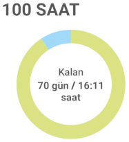

Swimming for Two Years
At the beginning of the IB Diploma Programme (IBDP), my back hurt from carrying around the 900-page Mathematics: Analysis and Approaches HL 2 book, and I decided to swim to relieve the pain. I noticed that when I swam I calmed down and slept better at night, so I continued to swim at least two km per hour each time. Some weeks I tried to swim longer as I had extra time, and some weeks I could not swim at all because I was busy with exams or assignments.
Looking back over the past four semesters, I am glad that I continued to swim throughout the program. The IBDP is very stressful and exhausting, so I highly recommend everyone to do some physical activity to relax themselves. This will not only help you mentally, but also protect your health, something that overwork can do a lot of harm to. Any sport without a high risk of injury is suitable, but I suggest that you try swimming.
